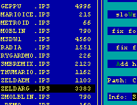
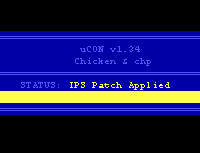

|
What They Are
|
|
When a ROM hacker makes an IPS patch, they use a program to
compare two slightly different files (usually an original game
ROM and their own hacked ROM), and save a record of all the
differences between them to a third file (called a patch file).
They then distribute the patch file to others who have the
original ROM. When the recipients use a patch program to apply
the patch to their original ROM, the program uses the original
ROM and the record of all the changes stored in the patch file
to build an exact copy of the hacked ROM.
The patch file is usually much smaller than the hacked ROM,
and so takes less time to download. But more importantly, the
patch file contains only the ROM hacker's work, and so does not
infringe on the original game maker's copyright. (Yup, no
matter how many changes you make to a ROM, it's illegal to
distribute the full ROM because portions of the copyrighted
work (graphics, game program, etc.) are still there.) The
IPS patch format has become popular out of necessity as much
as convenience.
|
|
Using SNESTool to Apply Patches
|
|
If you're new to PCs and/or emulators,
SNESTool is definitely the utility
to use since it's menu-based and there are fewer mistakes
you can make.
|
- Place SNESTOOL.EXE, your original ROM file (zelda.nes, for
example), and the IPS patch file (zelda.ips, for example) all
in the same directory. (Decompress them using a utility like
PKUNZIP or WinZip if necessary.)
- Double-click on SNESTOOL.EXE to run it.
- Use the arrow keys to highlight the Use IPS menu item and
press Enter to select it.
- SNESTool will display a list of all IPS files in the
current directory. Highlight the IPS file you want to use (like
zelda.ips) and press Enter.
- Now SNESTool will display a list of all files (including
ROMs, compressed files, IPS patches, and all other files)
in the directory. Highlight the ROM the patch was designed
for (like zelda.nes) and press Enter. (Make sure not to select
a compressed ROM or the IPS patch!) You should be given the
message "IPS patched ok." Enjoy your new and improved game!
|
|

|
|
Using UCON to Apply Patches
|
|
UCON's command-line interface
makes it a speedy alternative for experienced users. I can't
recommend it unless you have some experience with Windows
and/or DOS, though.
|
- Place UCON.EXE, your original ROM file (zelda.nes, for
example), and the IPS patch file (zelda.ips, for example) all
in the same directory. (Decompress them using a utility like
PKUNZIP or WinZip if necessary.)
- Bring up an MS-DOS prompt. (In Windows 9X, choose MS-DOS
Prompt from the Start menu.)
- Go to the directory where UCON.EXE, the ROM, and the IPS
patch are stored.
- Type "ucon i zelda.nes zelda.ips" at the DOS prompt
(replace "zelda.nes" with the name of your ROM, and
"zelda.ips" with the name of your IPS patch). UCON will run
and patch the ROM with the IPS file. You should be given the
message "IPS Patch Applied." Give the ROM a test drive!
|
|

|